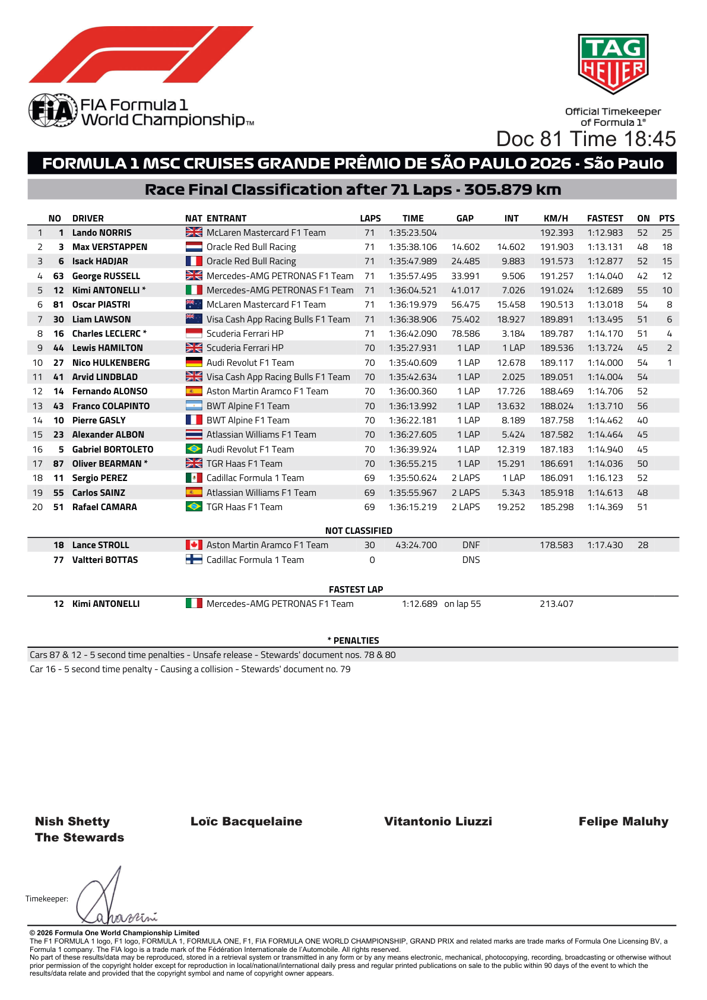
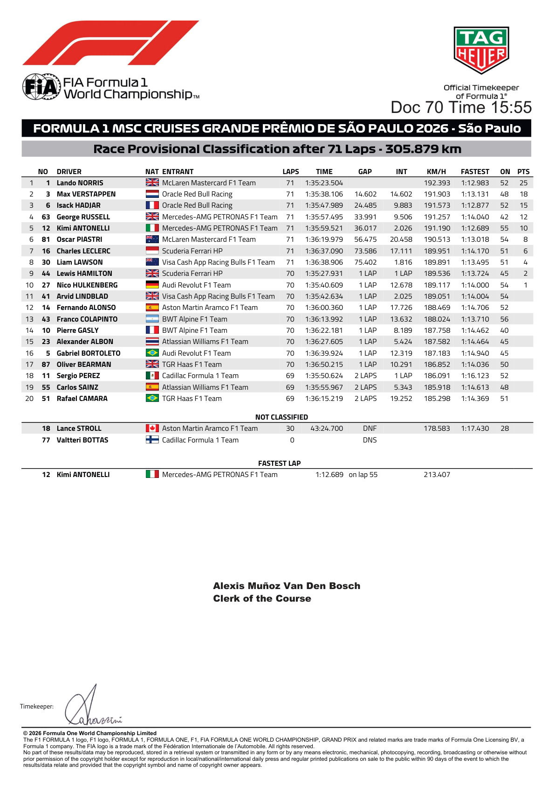
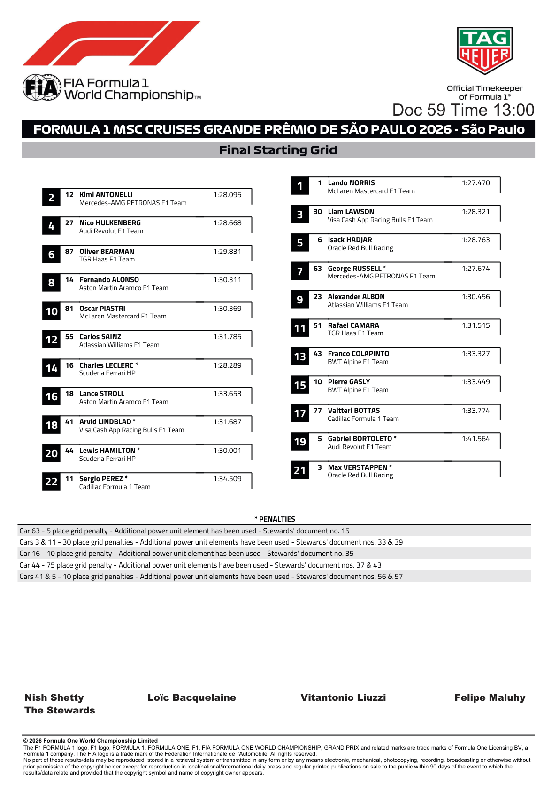
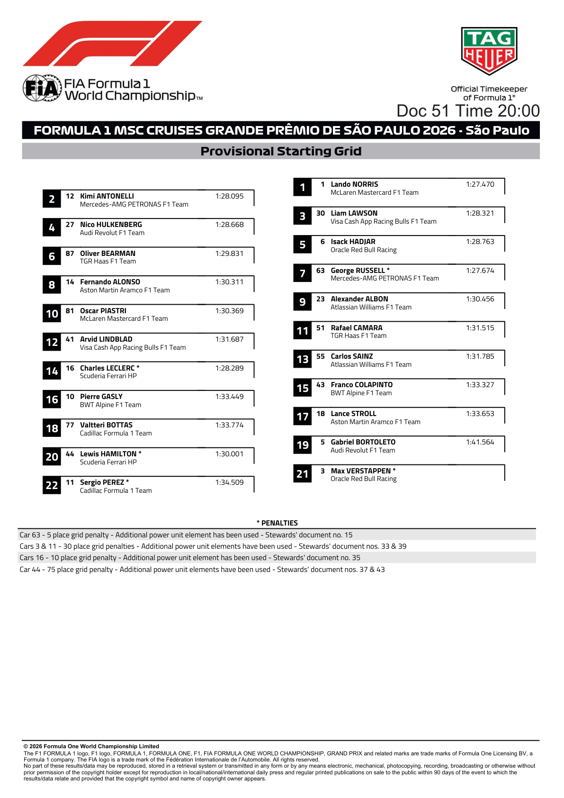
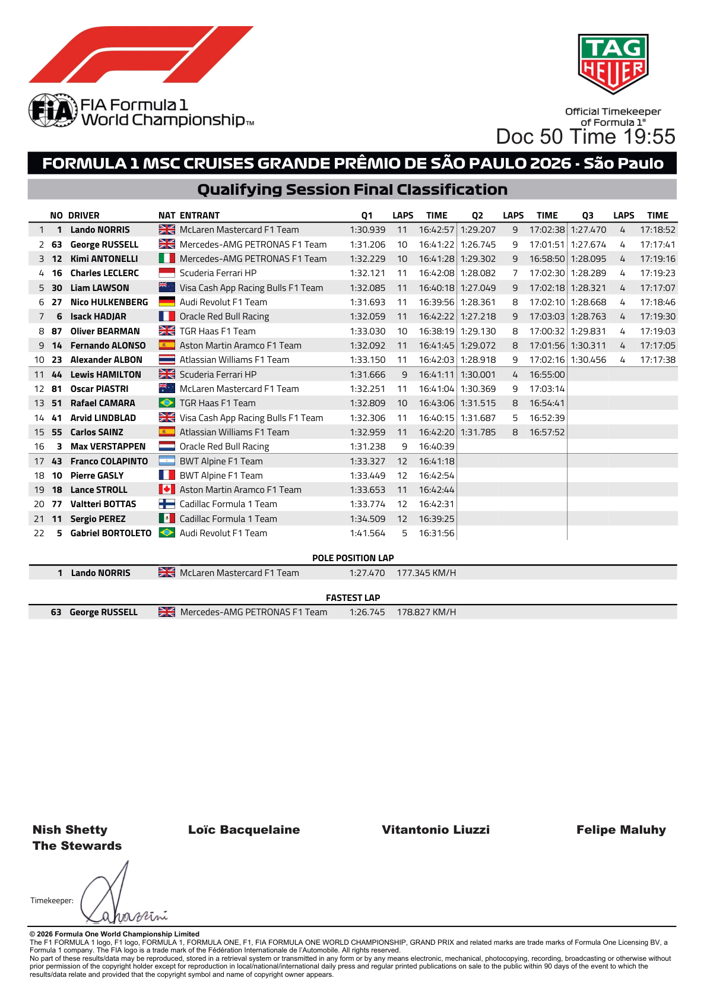
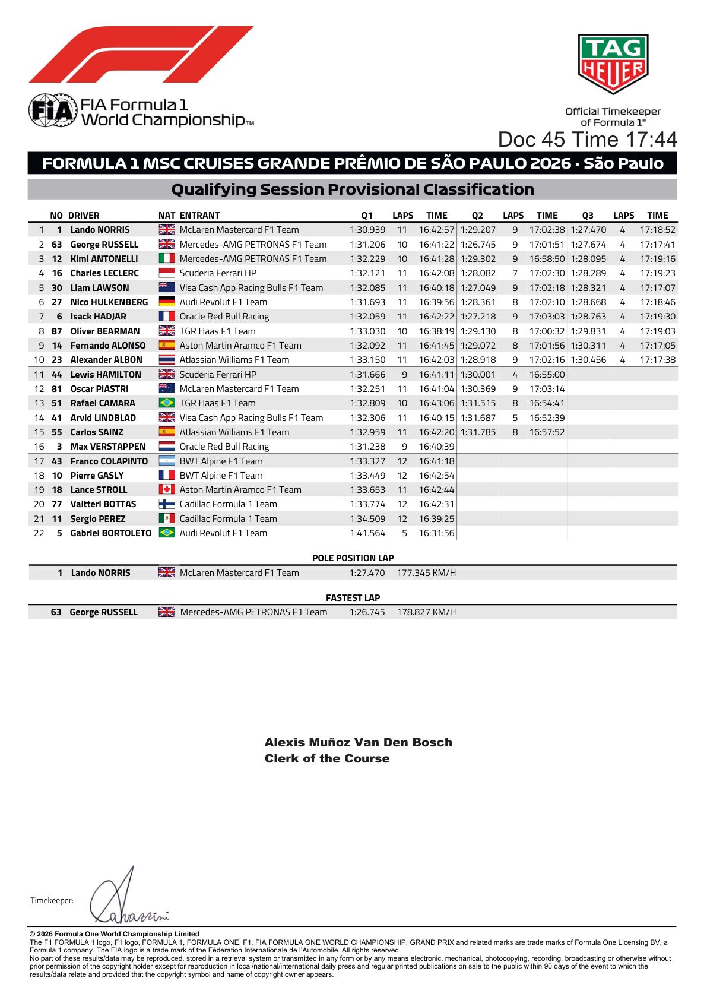
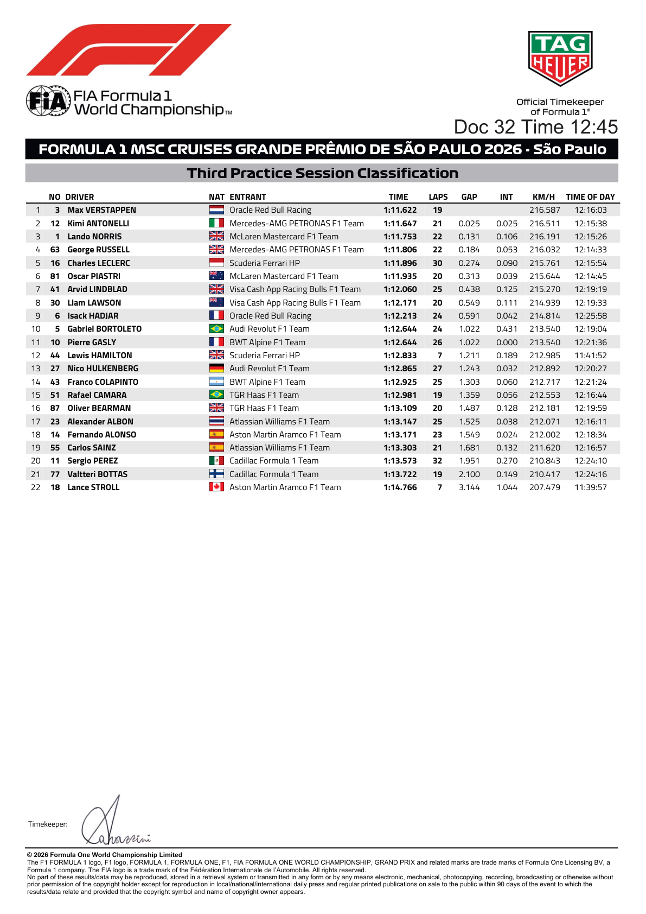

Session Results
Official FIA and Formula1.com classifications — 6 session(s) available.
FIA official session classifications
Official source; curated transcription may await review. Linked PDFs are the authority. Discovery does not extract or verify numeric values, and does not replace the curated material below.
Last successful FIA document discovery: 2026-11-11T18:48:55.789952+00:00. This is retrieval time, not issue time; newer revisions may exist.
- 2026_sao_paulo_grand_prix_-_final_race_classification.pdf (official PDF)
- 2026_sao_paulo_grand_prix_-_provisional_race_classification.pdf (official PDF)
- 2026_sao_paulo_grand_prix_-_final_starting_grid.pdf (official PDF)
- 2026_sao_paulo_grand_prix_-_provisional_starting_grid.pdf (official PDF)
- 2026_sao_paulo_grand_prix_-_final_qualifying_classification.pdf (official PDF)
- 2026_sao_paulo_grand_prix_-_provisional_qualifying_classification.pdf (official PDF)
- 2026_sao_paulo_grand_prix_-_free_practice_3_classification.pdf (official PDF)
- 2026_sao_paulo_grand_prix_-_free_practice_2_classification.pdf (official PDF)
- 2026_sao_paulo_grand_prix_-_free_practice_1_classification.pdf (official PDF)
Practice 1
Official Formula1.com classification · retrieved 2026-11-11T18:50:25+00:00
Tyres: FastF1 compound for the matching best lap (per knockout segment in qualifying). Unknown means timing or compound data is unavailable or does not match the published time.
| Pos. | No. | Driver | Team | Time / Gap | Tyre | Laps |
|---|---|---|---|---|---|---|
| 1 | 1 | Lando Norris NOR | McLaren | 1:11.717 | Unknown | 33 |
| 2 | 12 | Kimi Antonelli ANT | Mercedes | +0.082s | Unknown | 32 |
| 3 | 3 | Max Verstappen VER | Red Bull Racing | +0.236s | Unknown | 29 |
| 4 | 44 | Lewis Hamilton HAM | Ferrari | +0.324s | Unknown | 31 |
| 5 | 63 | George Russell RUS | Mercedes | +0.386s | Unknown | 30 |
| 6 | 6 | Isack Hadjar HAD | Red Bull Racing | +0.439s | Unknown | 25 |
| 7 | 62 | Gabriele Mini MIN | Alpine | +0.852s | Unknown | 28 |
| 8 | 5 | Gabriel Bortoleto BOR | Audi | +0.897s | Unknown | 30 |
| 9 | 43 | Franco Colapinto COL | Alpine | +0.937s | Unknown | 34 |
| 10 | 30 | Liam Lawson LAW | Racing Bulls | +0.998s | Unknown | 32 |
| 11 | 67 | Leonardo Fornaroli FOR | McLaren | +1.116s | Unknown | 28 |
| 12 | 87 | Oliver Bearman BEA | Haas F1 Team | +1.120s | Unknown | 27 |
| 13 | 14 | Fernando Alonso ALO | Aston Martin | +1.300s | Unknown | 26 |
| 14 | 41 | Arvid Lindblad LIN | Racing Bulls | +1.321s | Unknown | 32 |
| 15 | 77 | Valtteri Bottas BOT | Cadillac | +1.654s | Unknown | 16 |
| 16 | 23 | Alexander Albon ALB | Williams | +1.794s | Unknown | 18 |
| 17 | 46 | Luke Browning BRO | Williams | +1.874s | Unknown | 12 |
| 18 | 51 | Rafael Câmara CAM | Haas F1 Team | +1.979s | Unknown | 30 |
| 19 | 18 | Lance Stroll STR | Aston Martin | +2.043s | Unknown | 28 |
| 20 | 25 | Colton Herta HER | Cadillac | +2.558s | Unknown | 31 |
| 21 | 38 | Dino Beganovic BEG | Ferrari | +2.640s | Unknown | 11 |
| 22 | 98 | Freddie Slater SLA | Audi | +3.249s | Unknown | 7 |
Practice 2
Official Formula1.com classification · retrieved 2026-11-11T18:50:25+00:00
Tyres: FastF1 compound for the matching best lap (per knockout segment in qualifying). Unknown means timing or compound data is unavailable or does not match the published time.
| Pos. | No. | Driver | Team | Time / Gap | Tyre | Laps |
|---|---|---|---|---|---|---|
| 1 | 12 | Kimi Antonelli ANT | Mercedes | 1:10.763 | Unknown | 37 |
| 2 | 1 | Lando Norris NOR | McLaren | +0.253s | Unknown | 31 |
| 3 | 3 | Max Verstappen VER | Red Bull Racing | +0.259s | Unknown | 23 |
| 4 | 63 | George Russell RUS | Mercedes | +0.273s | Unknown | 35 |
| 5 | 81 | Oscar Piastri PIA | McLaren | +0.321s | Unknown | 32 |
| 6 | 44 | Lewis Hamilton HAM | Ferrari | +0.450s | Unknown | 35 |
| 7 | 16 | Charles Leclerc LEC | Ferrari | +0.720s | Unknown | 33 |
| 8 | 5 | Gabriel Bortoleto BOR | Audi | +1.017s | Unknown | 33 |
| 9 | 6 | Isack Hadjar HAD | Red Bull Racing | +1.076s | Unknown | 33 |
| 10 | 87 | Oliver Bearman BEA | Haas F1 Team | +1.228s | Unknown | 36 |
| 11 | 43 | Franco Colapinto COL | Alpine | +1.233s | Unknown | 33 |
| 12 | 41 | Arvid Lindblad LIN | Racing Bulls | +1.245s | Unknown | 36 |
| 13 | 30 | Liam Lawson LAW | Racing Bulls | +1.279s | Unknown | 36 |
| 14 | 10 | Pierre Gasly GAS | Alpine | +1.346s | Unknown | 37 |
| 15 | 14 | Fernando Alonso ALO | Aston Martin | +1.775s | Unknown | 34 |
| 16 | 51 | Rafael Câmara CAM | Haas F1 Team | +1.798s | Unknown | 30 |
| 17 | 55 | Carlos Sainz SAI | Williams | +1.979s | Unknown | 33 |
| 18 | 18 | Lance Stroll STR | Aston Martin | +2.179s | Unknown | 31 |
| 19 | 23 | Alexander Albon ALB | Williams | +2.190s | Unknown | 37 |
| 20 | 11 | Sergio Perez PER | Cadillac | +2.553s | Unknown | 34 |
| 21 | 77 | Valtteri Bottas BOT | Cadillac | +2.620s | Unknown | 33 |
Practice 3
Official Formula1.com classification · retrieved 2026-11-11T18:50:25+00:00
Tyres: FastF1 compound for the matching best lap (per knockout segment in qualifying). Unknown means timing or compound data is unavailable or does not match the published time.
| Pos. | No. | Driver | Team | Time / Gap | Tyre | Laps |
|---|---|---|---|---|---|---|
| 1 | 3 | Max Verstappen VER | Red Bull Racing | 1:11.622 | Unknown | 19 |
| 2 | 12 | Kimi Antonelli ANT | Mercedes | +0.025s | Unknown | 21 |
| 3 | 1 | Lando Norris NOR | McLaren | +0.131s | Unknown | 22 |
| 4 | 63 | George Russell RUS | Mercedes | +0.184s | Unknown | 22 |
| 5 | 16 | Charles Leclerc LEC | Ferrari | +0.274s | Unknown | 30 |
| 6 | 81 | Oscar Piastri PIA | McLaren | +0.313s | Unknown | 20 |
| 7 | 41 | Arvid Lindblad LIN | Racing Bulls | +0.438s | Unknown | 25 |
| 8 | 30 | Liam Lawson LAW | Racing Bulls | +0.549s | Unknown | 20 |
| 9 | 6 | Isack Hadjar HAD | Red Bull Racing | +0.591s | Unknown | 24 |
| 10 | 5 | Gabriel Bortoleto BOR | Audi | +1.022s | Unknown | 24 |
| 11 | 10 | Pierre Gasly GAS | Alpine | +1.022s | Unknown | 26 |
| 12 | 44 | Lewis Hamilton HAM | Ferrari | +1.211s | Unknown | 7 |
| 13 | 27 | Nico Hulkenberg HUL | Audi | +1.243s | Unknown | 27 |
| 14 | 43 | Franco Colapinto COL | Alpine | +1.303s | Unknown | 25 |
| 15 | 51 | Rafael Câmara CAM | Haas F1 Team | +1.359s | Unknown | 19 |
| 16 | 87 | Oliver Bearman BEA | Haas F1 Team | +1.487s | Unknown | 20 |
| 17 | 23 | Alexander Albon ALB | Williams | +1.525s | Unknown | 25 |
| 18 | 14 | Fernando Alonso ALO | Aston Martin | +1.549s | Unknown | 23 |
| 19 | 55 | Carlos Sainz SAI | Williams | +1.681s | Unknown | 21 |
| 20 | 11 | Sergio Perez PER | Cadillac | +1.951s | Unknown | 32 |
| 21 | 77 | Valtteri Bottas BOT | Cadillac | +2.100s | Unknown | 19 |
| 22 | 18 | Lance Stroll STR | Aston Martin | +3.144s | Unknown | 7 |
Qualifying
Official Formula1.com classification · retrieved 2026-11-11T18:50:25+00:00
Tyres: FastF1 compound for the matching best lap (per knockout segment in qualifying). Unknown means timing or compound data is unavailable or does not match the published time.
| Pos. | No. | Driver | Team | Q1 | Q1 tyre | Q2 | Q2 tyre | Q3 | Q3 tyre | Laps |
|---|---|---|---|---|---|---|---|---|---|---|
| 1 | 1 | Lando Norris NOR | McLaren | 1:30.939 | Unknown | 1:29.207 | Unknown | 1:27.470 | Unknown | 24 |
| 2 | 63 | George Russell RUS | Mercedes | 1:31.206 | Unknown | 1:26.745 | Unknown | 1:27.674 | Unknown | 23 |
| 3 | 12 | Kimi Antonelli ANT | Mercedes | 1:32.229 | Unknown | 1:29.302 | Unknown | 1:28.095 | Unknown | 23 |
| 4 | 16 | Charles Leclerc LEC | Ferrari | 1:32.121 | Unknown | 1:28.082 | Unknown | 1:28.289 | Unknown | 22 |
| 5 | 30 | Liam Lawson LAW | Racing Bulls | 1:32.085 | Unknown | 1:27.049 | Unknown | 1:28.321 | Unknown | 24 |
| 6 | 27 | Nico Hulkenberg HUL | Audi | 1:31.693 | Unknown | 1:28.361 | Unknown | 1:28.668 | Unknown | 23 |
| 7 | 6 | Isack Hadjar HAD | Red Bull Racing | 1:32.059 | Unknown | 1:27.218 | Unknown | 1:28.763 | Unknown | 24 |
| 8 | 87 | Oliver Bearman BEA | Haas F1 Team | 1:33.030 | Unknown | 1:29.130 | Unknown | 1:29.831 | Unknown | 22 |
| 9 | 14 | Fernando Alonso ALO | Aston Martin | 1:32.092 | Unknown | 1:29.072 | Unknown | 1:30.311 | Unknown | 23 |
| 10 | 23 | Alexander Albon ALB | Williams | 1:33.150 | Unknown | 1:28.918 | Unknown | 1:30.456 | Unknown | 24 |
| 11 | 44 | Lewis Hamilton HAM | Ferrari | 1:31.666 | Unknown | 1:30.001 | Unknown | — | 13 | |
| 12 | 81 | Oscar Piastri PIA | McLaren | 1:32.251 | Unknown | 1:30.369 | Unknown | — | 20 | |
| 13 | 51 | Rafael Câmara CAM | Haas F1 Team | 1:32.809 | Unknown | 1:31.515 | Unknown | — | 18 | |
| 14 | 41 | Arvid Lindblad LIN | Racing Bulls | 1:32.306 | Unknown | 1:31.687 | Unknown | — | 16 | |
| 15 | 55 | Carlos Sainz SAI | Williams | 1:32.959 | Unknown | 1:31.785 | Unknown | — | 19 | |
| 16 | 3 | Max Verstappen VER | Red Bull Racing | 1:31.238 | Unknown | — | — | 9 | ||
| 17 | 43 | Franco Colapinto COL | Alpine | 1:33.327 | Unknown | — | — | 12 | ||
| 18 | 10 | Pierre Gasly GAS | Alpine | 1:33.449 | Unknown | — | — | 12 | ||
| 19 | 18 | Lance Stroll STR | Aston Martin | 1:33.653 | Unknown | — | — | 11 | ||
| 20 | 77 | Valtteri Bottas BOT | Cadillac | 1:33.774 | Unknown | — | — | 12 | ||
| 21 | 11 | Sergio Perez PER | Cadillac | 1:34.509 | Unknown | — | — | 12 | ||
| 22 | 5 | Gabriel Bortoleto BOR | Audi | 1:41.564 | Unknown | — | — | 5 |
Starting Grid
FIA Document 59 final Starting Grid · retrieved 2026-11-08T18:34:24+00:00
| Pos. | No. | Driver | Team | Time |
|---|---|---|---|---|
| 1 | 1 | Lando Norris NOR | McLaren | 1:27.470 |
| 2 | 12 | Kimi Antonelli ANT | Mercedes | 1:28.095 |
| 3 | 30 | Liam Lawson LAW | Racing Bulls | 1:28.321 |
| 4 | 27 | Nico Hulkenberg HUL | Audi | 1:28.668 |
| 5 | 6 | Isack Hadjar HAD | Red Bull Racing | 1:28.763 |
| 6 | 87 | Oliver Bearman BEA | Haas F1 Team | 1:29.831 |
| 7 | 63 | George Russell RUS | Mercedes | 1:27.674 |
| 8 | 14 | Fernando Alonso ALO | Aston Martin | 1:30.311 |
| 9 | 23 | Alexander Albon ALB | Williams | 1:30.456 |
| 10 | 81 | Oscar Piastri PIA | McLaren | 1:30.369 |
| 11 | 51 | Rafael Câmara CAM | Haas F1 Team | 1:31.515 |
| 12 | 55 | Carlos Sainz SAI | Williams | 1:31.785 |
| 13 | 43 | Franco Colapinto COL | Alpine | 1:33.327 |
| 14 | 16 | Charles Leclerc LEC | Ferrari | 1:28.289 |
| 15 | 10 | Pierre Gasly GAS | Alpine | 1:33.449 |
| 16 | 18 | Lance Stroll STR | Aston Martin | 1:33.653 |
| 17 | 77 | Valtteri Bottas BOT | Cadillac | 1:33.774 |
| 18 | 41 | Arvid Lindblad LIN | Racing Bulls | 1:31.687 |
| 19 | 5 | Gabriel Bortoleto BOR | Audi | 1:41.564 |
| 20 | 44 | Lewis Hamilton HAM | Ferrari | 1:30.001 |
| 21 | 3 | Max Verstappen VER | Red Bull Racing | |
| 22 | 11 | Sergio Perez PER | Cadillac | 1:34.509 |
Race
Official Formula1.com classification · retrieved 2026-11-11T18:50:25+00:00
| Pos. | No. | Driver | Team | Laps | Time / Retired | Pts. |
|---|---|---|---|---|---|---|
| 1 | 1 | Lando Norris NOR | McLaren | 71 | 1:35:23.504 | 25 |
| 2 | 3 | Max Verstappen VER | Red Bull Racing | 71 | +14.602s | 18 |
| 3 | 6 | Isack Hadjar HAD | Red Bull Racing | 71 | +24.485s | 15 |
| 4 | 63 | George Russell RUS | Mercedes | 71 | +33.991s | 12 |
| 5 | 12 | Kimi Antonelli ANT | Mercedes | 71 | +41.017s | 10 |
| 6 | 81 | Oscar Piastri PIA | McLaren | 71 | +56.475s | 8 |
| 7 | 30 | Liam Lawson LAW | Racing Bulls | 71 | +75.402s | 6 |
| 8 | 16 | Charles Leclerc LEC | Ferrari | 71 | +78.586s | 4 |
| 9 | 44 | Lewis Hamilton HAM | Ferrari | 70 | +1 lap | 2 |
| 10 | 27 | Nico Hulkenberg HUL | Audi | 70 | +1 lap | 1 |
| 11 | 41 | Arvid Lindblad LIN | Racing Bulls | 70 | +1 lap | 0 |
| 12 | 14 | Fernando Alonso ALO | Aston Martin | 70 | +1 lap | 0 |
| 13 | 43 | Franco Colapinto COL | Alpine | 70 | +1 lap | 0 |
| 14 | 10 | Pierre Gasly GAS | Alpine | 70 | +1 lap | 0 |
| 15 | 23 | Alexander Albon ALB | Williams | 70 | +1 lap | 0 |
| 16 | 5 | Gabriel Bortoleto BOR | Audi | 70 | +1 lap | 0 |
| 17 | 87 | Oliver Bearman BEA | Haas F1 Team | 70 | +1 lap | 0 |
| 18 | 11 | Sergio Perez PER | Cadillac | 69 | +2 laps | 0 |
| 19 | 55 | Carlos Sainz SAI | Williams | 69 | +2 laps | 0 |
| 20 | 51 | Rafael Câmara CAM | Haas F1 Team | 69 | +2 laps | 0 |
| NC | 18 | Lance Stroll STR | Aston Martin | 30 | DNF | 0 |
| NC | 77 | Valtteri Bottas BOT | Cadillac | 0 | DNS | 0 |
Official FIA document screenshots
Automatically rendered from the official PDFs. These figures do not update or verify the curated numeric transcriptions above. Unchanged pages already illustrated above are not repeated here.
2026_sao_paulo_grand_prix_-_final_race_classification.pdf
PDF retrieved 2026-11-11T18:48:57+00:00; this is not its issue date.

2026_sao_paulo_grand_prix_-_provisional_race_classification.pdf
PDF retrieved 2026-11-11T18:48:57+00:00; this is not its issue date.

2026_sao_paulo_grand_prix_-_final_starting_grid.pdf
PDF retrieved 2026-11-11T18:48:57+00:00; this is not its issue date.

2026_sao_paulo_grand_prix_-_provisional_starting_grid.pdf
PDF retrieved 2026-11-11T18:48:57+00:00; this is not its issue date.

2026_sao_paulo_grand_prix_-_final_qualifying_classification.pdf
PDF retrieved 2026-11-11T18:48:57+00:00; this is not its issue date.

2026_sao_paulo_grand_prix_-_provisional_qualifying_classification.pdf
PDF retrieved 2026-11-11T18:48:57+00:00; this is not its issue date.

2026_sao_paulo_grand_prix_-_free_practice_3_classification.pdf
PDF retrieved 2026-11-11T18:48:57+00:00; this is not its issue date.

2026_sao_paulo_grand_prix_-_free_practice_2_classification.pdf
PDF retrieved 2026-11-11T18:48:57+00:00; this is not its issue date.
2026_sao_paulo_grand_prix_-_free_practice_1_classification.pdf
PDF retrieved 2026-11-11T18:48:57+00:00; this is not its issue date.